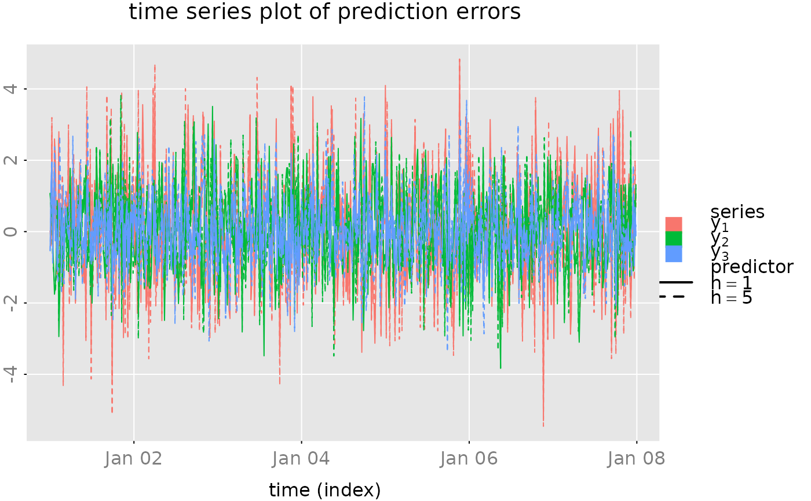

Plot Forecasts
plot_prediction.RdThe function plot_prediction generates some standard plots of forecasts and forecast errors.
Arguments
- pred
a list with the true data and the forecasts, as produced by
predict(). One may also add a slot "date" with a numeric vector of indices or a vector of typeDateorPOSIXctwhich contains date/time values.- which
(character string) selects the type the plot.
- qu
(numeric scalar or vector) determines the width of the plotted confidence intervalls. If an entry is
NAor equal to zero then no confidence band is plotted.- col, lty
optional (vectors of) colors and line styles.
- style
character string determines the general style of the plot (background color, grid style, axis and axis-labels colors, ...). See also
style_parameters().- parse_names
parse series names and predictor names to
expression(). SeegrDevices::plotmath().- plot
(boolean) produce a plot or just return a "closure" which then produces the plot.
- ...
not used
Value
If plot=TRUE then plot_prediction returns (invisibly) a function,
subfig(i = 1) say, which may be used to add additional graphic elements to the subfigures.
The call opar = subfig(i) creates a new (sub) plot at the (i)-th position with suitable
margins and axis limits. The output opar contains the original graphics parameters,
see graphics::par().
If plot=FALSE then a function, plotfun(xlim = NULL) say, is returned which produces
the desired plot. The optional parameter xlim = c(x1,x2) may be used to zoom into
a certain time range. The function plotfun returns a function/closure to add
further graphical elements to the plot as described above.
See also the examples below.
See also
The utility zoom_plot() may be used to interactivly zoom in and scroll
such a plot (provided that the shiny package is installed).
Examples
# set seed for random number generation, to get reproducable results
set.seed(1609)
# generate a random state space model with three outputs and 4 states
model = test_stspmod(dim = c(3,3), s = 4, bpoles = 1, bzeroes = 1)
# create a vector "date" with date/time info
date = seq(as.POSIXct('2017-01-01'), by = 15*60, length.out = 768)
n.obs = sum(date < as.POSIXct('2017-01-08'))
n.ahead = length(date) - n.obs
# generate random data
data = sim(model, n.obs = n.obs, s1 = NA)
# compute predictions
pred = predict(model, data$y, h = c(1, 5), n.ahead = n.ahead)
# add the date/time information to the list "pred"
pred$date = date
# the default "predictor names" h=1, h=2, ...
# don't look well, when plotted as expressions
dimnames(pred$yhat)[[3]] = gsub('=','==',dimnames(pred$yhat)[[3]])
# generate some plots ####################
# a simple/compressed plot of the data
p.y0 = plot_prediction(pred, which = 'y0', style = 'bw',
parse_names = TRUE, plot = FALSE)
# p.y0()
# a simple/compressed plot of the prediction errors
plot_prediction(pred, which = 'u0', parse_names = TRUE)

# plot of the prediction errors (with 95% confidence intervalls)
# plot_prediction(pred, which = 'error', qu = c(2,2,2),
# parse_names = TRUE)
# plot of the true vales and the predicted values (+ 50% confidence region
# for the 1-step ahead prediction and the "out of sample" predictions)
p.y = plot_prediction(pred, qu = c(qnorm(0.75), NA, qnorm(0.75)),
parse_names = TRUE, plot = FALSE)
# subfig = p.y(xlim = date[c(n.obs-20, n.obs+20)])
# opar = subfig(1)
# abline(v = mean(as.numeric(date[c(n.obs, n.obs+1)])), col = 'red')
# mtext(paste(' example plot:', date()), side = 1, outer = TRUE,
# cex = 0.5, col = 'gray', adj = 0)
# graphics::par(opar) # reset the graphical parameters
# CUSUM plot of the prediction errors
# plot_prediction(pred, which = 'cusum',
# style = 'gray', parse_names = TRUE)
# CUSUM2 plot of the prediction errors
# plot_prediction(pred, which = 'cusum2', parse_names = TRUE)
set.seed(NULL) # reset seed
if (FALSE) {
# open a 'shiny-App' window, where we can zoom
# into the plot with the prediction(s)
require(shiny)
zoom_plot(p.y, p.y0, 'Test zoom & scroll')
}